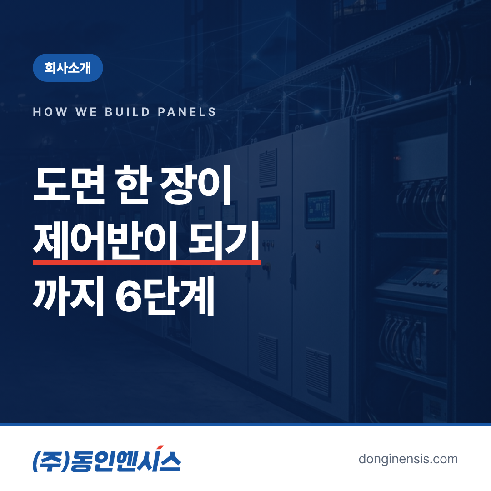
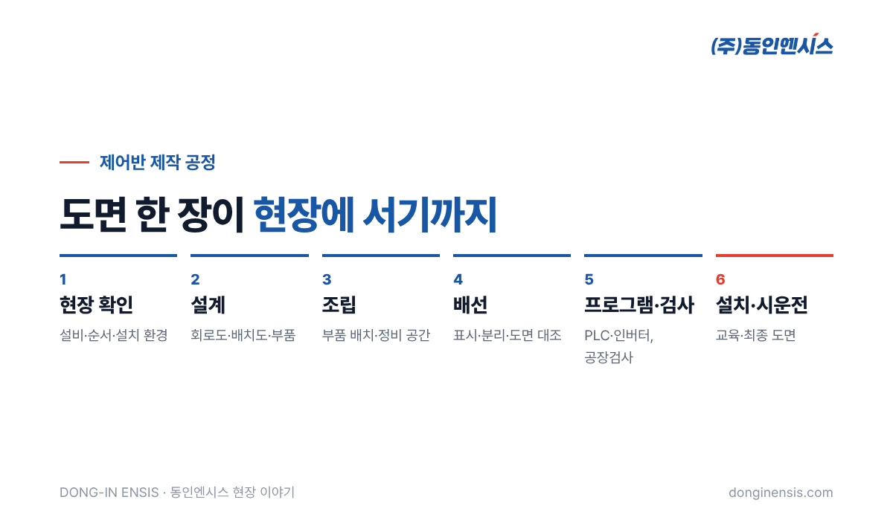
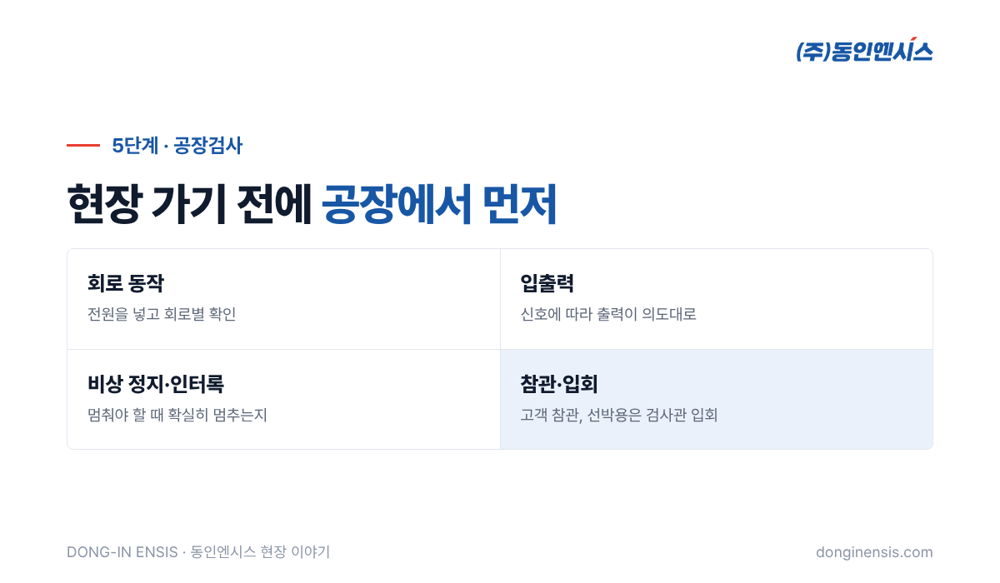

공장이나 배의 설비 옆에 서 있는 회색 철제 함, 제어반은 겉으로 보면 모두 비슷해 보입니다. 하지만 그 문을 열면 수백 가닥의 전선과 PLC, 인버터, 차단기가 각자 정해진 자리를 지키고 있습니다. 이 한 대가 만들어지기까지는 생각보다 많은 손과 확인이 필요합니다. 부산에 본사를 두고 양산과 기장 공장에서 제어반을 직접 설계·제작하는 동인엔시스의 제어반 제작 공정을, 도면 한 장에서 현장 시운전까지 여섯 단계로 따라가 보겠습니다.
먼저 전체 흐름부터 보겠습니다. 동인엔시스의 제어반 제작 공정은 크게 여섯 단계로 나뉩니다.
지능형 제어반의 경우 표준 일정으로 현장 분석에 1주, 설계부터 배선·PLC 프로그램·공장검사까지 제작에 5주를 잡습니다. 그 뒤 서버 구성과 현장 시운전이 이어집니다. 설비와 현장 조건에 따라 기간은 달라질 수 있습니다. 아래에서 단계마다 무엇을 하고, 왜 그 일이 중요한지를 차례로 살펴보겠습니다. 제어반 제작 공정을 알아 두면 발주할 때 어느 단계에서 무엇을 확인해야 할지도 분명해집니다.

좋은 제어반은 도면보다 질문에서 시작합니다. 어떤 설비를 몇 대 제어하는지, 모터 용량은 얼마인지, 설비가 어떤 순서로 켜지고 꺼져야 하는지, 비상시에는 무엇을 먼저 멈춰야 하는지를 먼저 확인합니다.
제어반이 놓일 자리도 중요합니다. 실내인지 실외인지, 먼지와 습기가 많은지, 배처럼 흔들리는 곳인지에 따라 외함의 재질과 보호 등급, 부품 배치가 달라집니다. 기존 제어반을 바꾸는 경우라면 지금 배선이 도면과 같은지도 현장에서 확인합니다. 이 단계에서 놓친 것은 뒤로 갈수록 고치기 어렵고 비용도 커집니다.
확인한 내용을 바탕으로 설계를 합니다. 설계의 결과물은 크게 세 가지입니다.
슈나이더 일렉트릭 공식 SI 파트너이자 여러 해외 제조사의 공급 파트너로 오래 일해 온 덕분에 부품마다의 성격을 잘 압니다. 그래서 설계 단계에서 현장 조건에 맞는 조합을 고를 수 있습니다. 선박용이라면 이 도면이 선급의 승인을 받아야 다음 단계로 넘어갑니다.
도면이 확정되면 부품을 준비하고 외함 안에 조립합니다. 부품을 고정할 판에 구멍을 뚫고, 레일을 달고, 차단기와 PLC, 인버터, 단자대를 배치도대로 자리 잡게 합니다.
이 단계에서 신경 쓰는 것은 '나중에 손볼 사람'입니다. 부품 사이 간격이 너무 좁으면 열이 빠지지 않고, 교체할 때 손이 들어가지 않습니다. 몇 년 뒤 현장에서 정비할 사람이 쉽게 작업할 수 있도록 공간을 남겨 두는 것도 설계와 조립의 일부입니다. 나중에 설비가 늘어날 것에 대비해 예비 공간과 여유 단자를 남겨 두기도 합니다.
Photorealistic photo inside a Korean control panel workshop: a technician in a navy work uniform mounting circuit breakers and terminal blocks on DIN rails inside an open light-grey steel enclosure lying on a workbench, printed wiring diagram sheets beside it (no readable text), bright even factory lighting, documentary style, no brand logos, no readable text. 3:2 landscape.
배선은 제어반 제작에서 가장 손이 많이 가고 시간도 오래 걸리는 일입니다. 회로도를 보며 전선 한 가닥 한 가닥을 정해진 단자에 연결합니다.
깔끔한 배선은 보기 좋으라고 하는 일이 아닙니다. 현장에서 문제가 생겼을 때 어느 선을 따라가면 되는지 바로 알 수 있어야 고치는 시간이 줄어듭니다. 배선이 끝나면 도면과 실제 연결이 같은지, 잘못 연결되거나 빠진 선은 없는지 하나씩 확인합니다.
배선이 끝난 제어반에 PLC 프로그램과 인버터 설정을 넣습니다. 설비가 어떤 순서로 켜지고, 어떤 조건에서 멈추고, 이상이 생기면 무엇을 알릴지가 이 프로그램에 담깁니다. 동인엔시스는 이 프로그램을 외부에 맡기지 않고 자체 엔지니어가 직접 짭니다. 지능형 제어반이라면 여기에 데이터 수집과 전송 설정도 더해집니다.
현장에 보내기 전에 공장에서 제어반을 먼저 돌려 봅니다. 전원을 넣어 각 회로가 제대로 동작하는지, 입력 신호에 따라 출력이 의도대로 나오는지, 비상 정지와 인터록이 제대로 걸리는지를 확인합니다. 고객이 함께 참관하기도 하고, 선박용은 선급 검사관이 입회한 가운데 시험을 진행합니다.
공장에서 찾은 문제는 공장에서 고치는 것이 가장 빠르고 쌉니다. 현장에서 설비를 세워 둔 채 고치는 것과 비교하면 차이가 큽니다. 제어반 제작 공정 전체에서 공장검사에 공을 들이는 이유입니다.

공장검사를 마친 제어반은 포장해 현장으로 옮기고, 설비 옆에 설치한 뒤 현장 배선을 연결합니다. 그다음 실제 설비를 붙여 시운전합니다. 공장에서는 신호로만 확인했던 동작을 이제 진짜 모터와 펌프로 확인하는 단계입니다.
시운전에서는 설비가 순서대로 움직이는지, 보호 기능이 제대로 동작하는지를 보고, 지능형 제어반이라면 데이터가 서버까지 들어오는지와 알람 기준이 현장에 맞는지도 함께 맞춥니다. 마지막으로 운전 담당자에게 조작과 대응 방법을 교육하고, 시운전에서 바뀐 내용까지 반영한 최종 도면과 함께 넘겨 드립니다.
Photorealistic photo of a newly installed light-grey industrial control cabinet beside a large electric motor and pump on site in a Korean industrial plant, two engineers in hard hats checking the open cabinet with a laptop, cable trays overhead, natural daylight, documentary style, no brand logos, no readable text. 3:2 landscape.
Q. 제어반 제작 공정 중 고객이 확인할 수 있는 단계가 있나요? 도면 검토와 공장검사 단계에서 함께 확인할 수 있습니다. 특히 공장검사는 현장에 보내기 전 동작을 직접 볼 수 있는 좋은 기회입니다.
Q. 제작 기간은 얼마나 걸리나요? 지능형 제어반은 설계부터 공장검사까지 표준 5주를 잡고, 전체 도입은 9~15주가 일반적입니다. 설비 수와 현장 조건에 따라 달라집니다.
Q. 해외로 가는 제어반도 같은 공정인가요? 큰 흐름은 같습니다. 다만 현지 전원과 인증 기준을 설계 단계부터 반영하고, 출고 전 시험을 더 꼼꼼히 합니다.
제어반 한 대에는 질문과 도면, 조립과 배선, 프로그램과 시험이 차곡차곡 쌓여 있습니다. 750건이 넘는 현장에서 이 과정을 반복하며 익힌 꼼꼼함은, 이제 제어반이 남기는 설비 데이터를 믿을 수 있게 만드는 바탕이 되고 있습니다. 까다로운 현장의 제어 경험이 데이터 인프라의 신뢰성으로 이어지는 셈입니다.
제작 상담 051-862-3668 · dongin@donginmne.com
아래 질문 중 하나에 실제 경험으로 답해 본문 적당한 곳에 넣어 주세요. 사람이 직접 쓴 문장이 들어가면 네이버에서 저품질 위험이 줄고 노출에 도움이 됩니다.